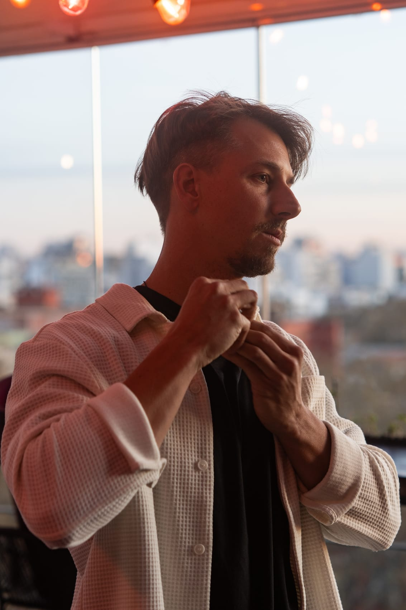
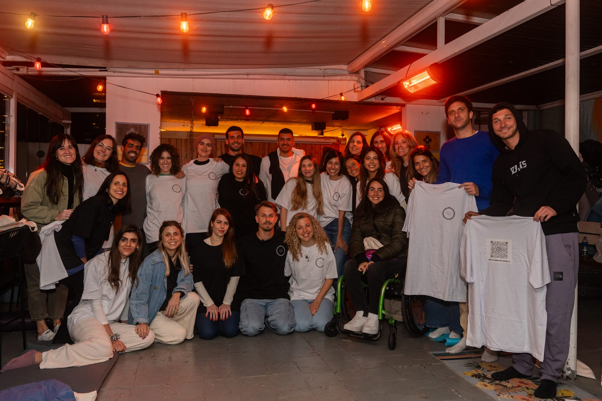
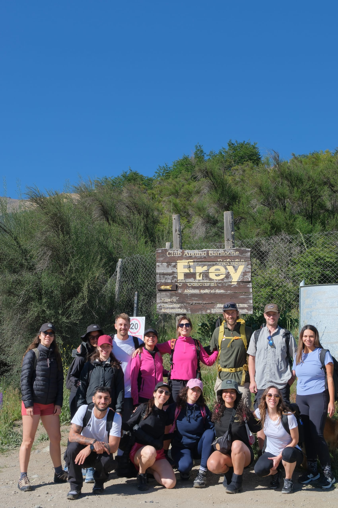
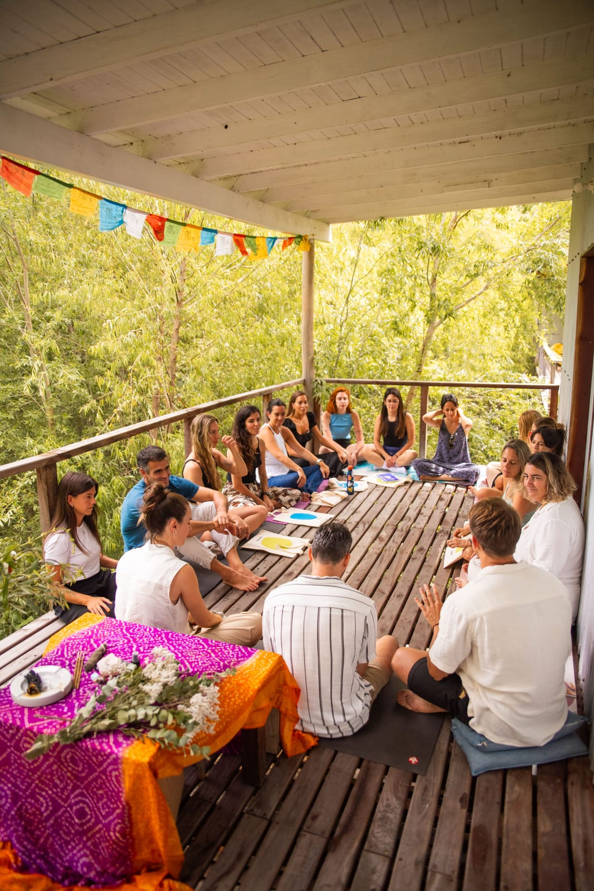
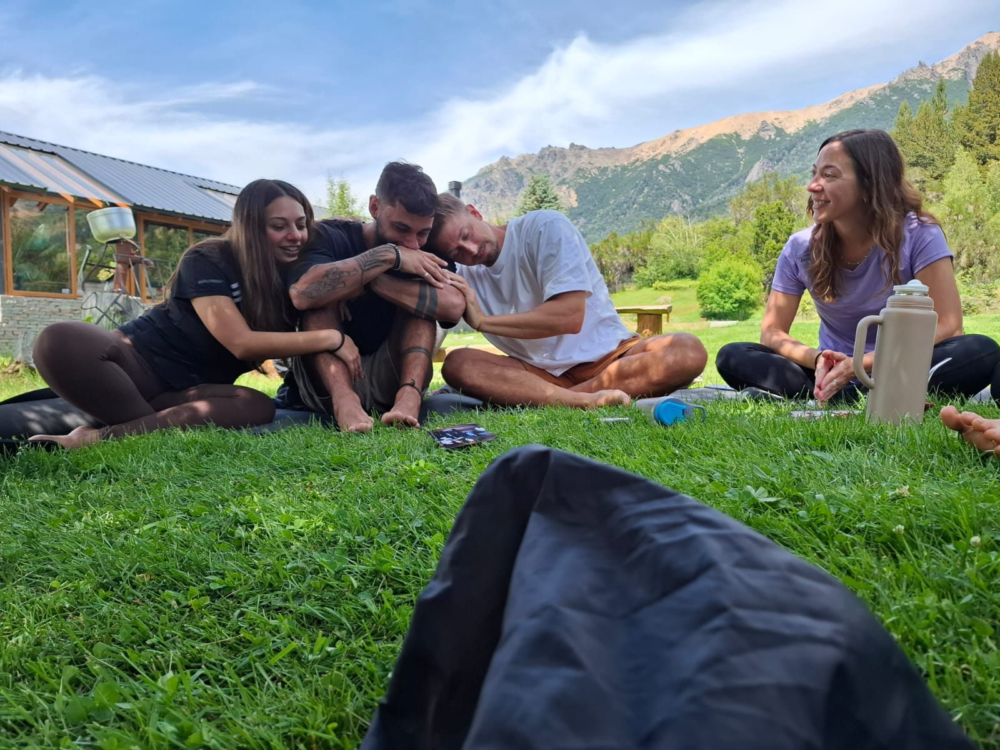
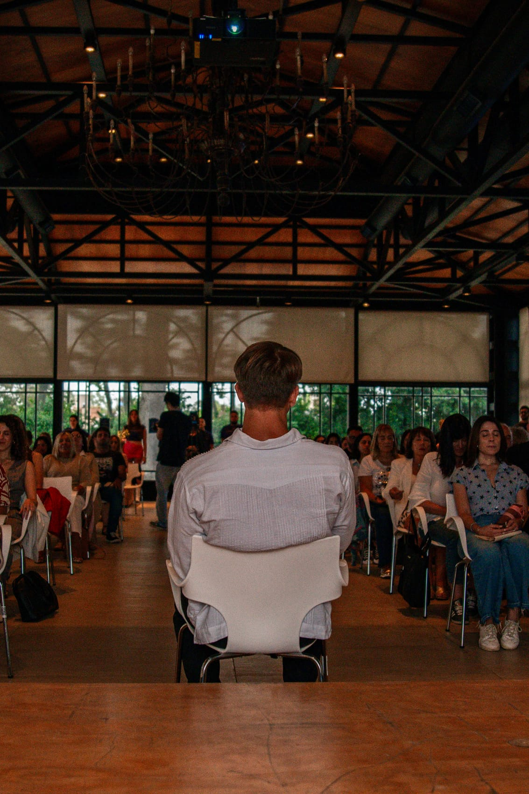
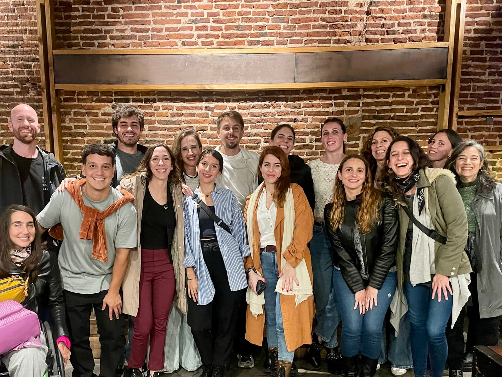
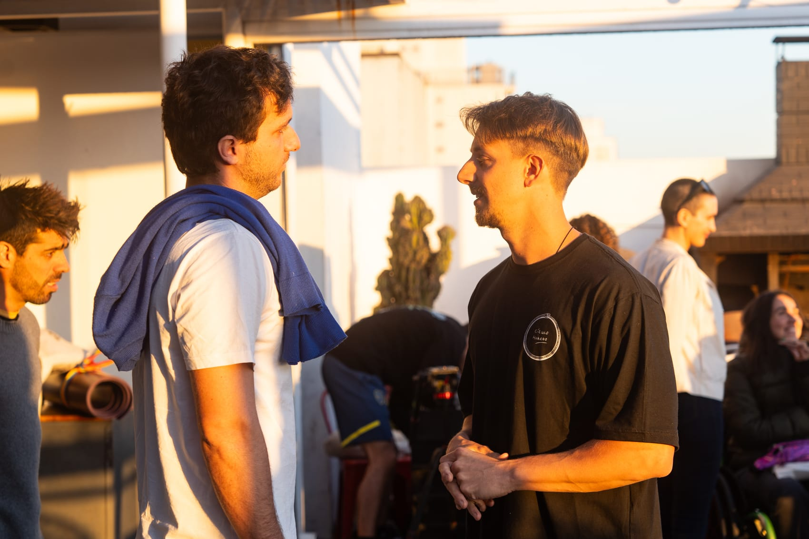
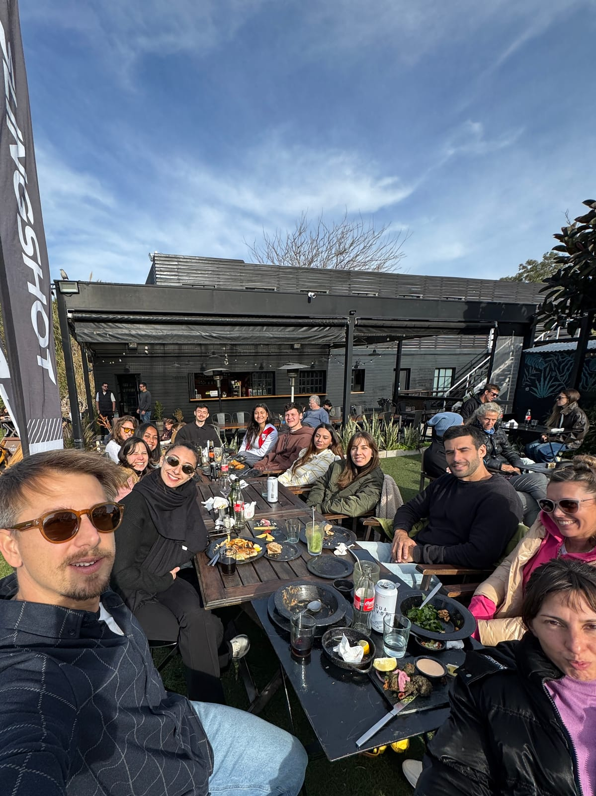
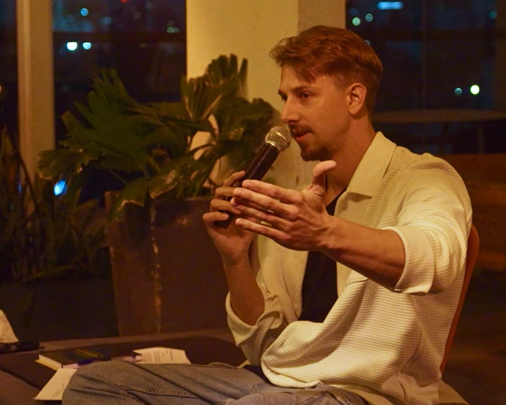

“
Testimonio pendiente — tiene que contar cómo llegó sin saber hacia dónde iba y qué cambió.
Círculo Humano · La comunidad
Sé lo desesperante que es buscar dirección con la cabeza durante tantos años y sé también lo solitario y confuso que puede ser esta búsqueda. No es necesario vivir este proceso en soledad. El Círculo Humano va a darte la claridad que estás buscando y la velocidad que te merecés.
Acompañamiento Círculo Humano
Si tu vida actual te frustra y sentís que estás en una búsqueda mental constante, este espacio es para vos y podés sumarte hoy.
Qué incluye
No tenés que tener todo claro. Solo se necesita dar un paso.
Te respondemos por WhatsApp y coordinamos el pago según tu país
¿De qué se trata?
Círculo Humano es un espacio transformador para personas que no están dispuestas a vivir una vida de frustración y desean crear una dirección próspera y auténtica.
Una explicación de pocos minutos para entender qué podés esperar de esta experiencia.
Una frecuencia para recuperar claridad y dirección desde un lugar auténtico, libre y con propósito.
Un espacio para conectar con personas que se hacen las mismas preguntas. Llegó el momento de dejar de sostener historias que no nos representan. El Círculo Humano es una oportunidad para recuperar claridad, energía, foco y descubrir para qué nacimos en realidad.

¿Quién acompaña este proceso?
Matías se dedicó a la economía hasta los 32 años, cuando decidió soltarlo todo y aparecieron preguntas como: ¿para qué nací?, ¿para qué soy bueno?, ¿cómo puedo ser útil para los demás?, ¿quién soy?
En esa profunda autoindagación apareció el coaching como una forma de acompañar a personas que se ahogan en esas mismas preguntas.
Esa transformación tuvo como resultado la creación de este espacio, que ya acompañó a cientos de personas a encontrar una dirección auténtica y propia, desde un lugar que puedan sostener en el tiempo. Porque el cambio verdadero necesita continuidad, práctica y sostén.
Qué vas a encontrar
Un encuentro con Matías Rebozov para comprender dónde estás y cómo acompañarte.
Un espacio semanal fijo al que volver, sin sentir que empezás de cero.
Participás desde donde estés, o en persona cuando puedas estar.
Volvés a cada encuentro cuando lo necesites, a tu ritmo.
La práctica llevada más lejos, a tu ritmo, incluida en el acompañamiento.
Personas que se hacen las mismas preguntas y caminan el mismo proceso.
No tenés que esperar al sábado: el sostén está disponible cuando lo necesitás.
En movimiento










Esto no es terapia tradicional
Basta de buscar el porqué una y otra vez. Basta de procesos eternos hablando de lo mismo. Es hora de mirarnos con honestidad, compartiendo el camino de manera amorosa, cuidada y divertida, para que aparezcan las respuestas que una mente sola nunca encontraría.
Lo que pasa dentro del Círculo
Testimonio pendiente — tiene que contar cómo llegó sin saber hacia dónde iba y qué cambió.
Testimonio pendiente — tiene que contar la frustración con la vida que tenía y qué se movió.
Testimonio pendiente — tiene que contar años de buscar con la cabeza y cómo salió de ahí.
Testimonio pendiente — tiene que contar la soledad del proceso y qué cambió al hacerlo en grupo.
Testimonio pendiente — tiene que contar el para qué que apareció y cómo lo encontró.
Testimonio pendiente — tiene que contar la claridad, la energía y el foco que recuperó.
Para empezar
No tenés que tener todo claro. Solo se necesita dar un paso.
Si te gustaría de una vez por todas soltar lo obsoleto para dar espacio a lo nuevo, este espacio es para vos.
Quiero formar parteContacto y redes